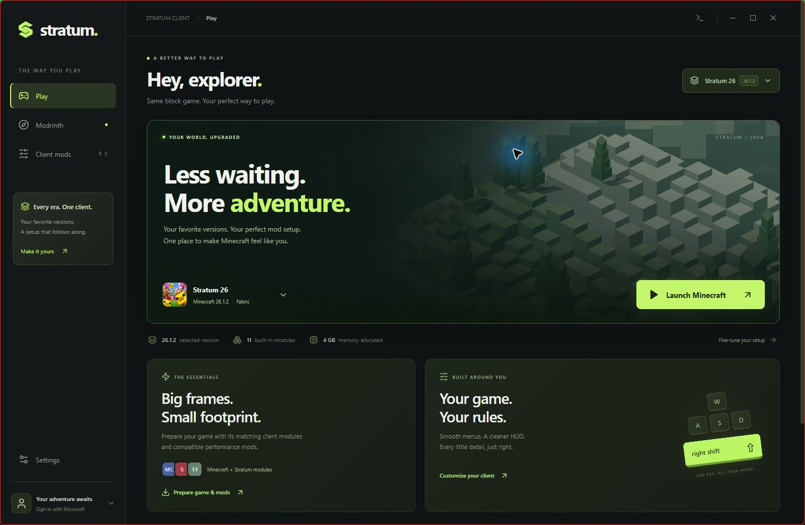
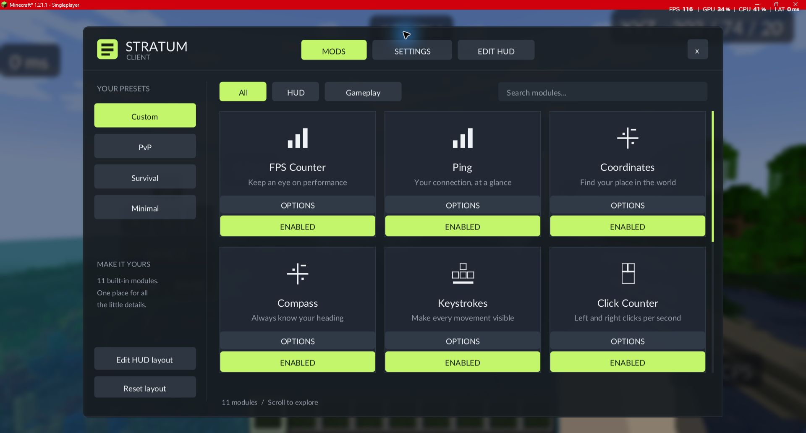

Find your era.
Choose a version family and patch. Each exact patch keeps its own worlds, compatible mod files and saved HUD preferences.
Your favorite block game, with a little more you. Switch versions, find compatible mods, and put every detail of your HUD in its place.

Version families
Exact game patches
Built-in modules
Same game.
Your way to play.
One place for the versions you love and the settings that make them feel familiar.
Choose a version family and patch. Each exact patch keeps its own worlds, compatible mod files and saved HUD preferences.
Browse Modrinth inside the launcher. Downloads are matched to the selected Minecraft version and loader, with required dependency checks.
Press Right Shift for a smooth module menu. Change colors, scale and opacity, then drag widgets into place with the HUD editor.

Thirteen supported patches. Matching client files.
A version picker that remembers your last choice.
26.1 26.1.2 26.2
1.21.1
1.20.1
1.19.4
1.18.2
1.17.1
1.16.5
1.12.2
1.8 1.8.9
1.7.10
26 is the series name. Select one of its exact patches to play. Classic versions use Legacy Fabric; modern versions use Fabric.
Stratum uses Microsoft's browser sign-in to authenticate players and checks Minecraft: Java Edition ownership before launching the game.
The browser flow is implemented. The current preview still needs application approval before Minecraft account sign-in can complete. A public download is not linked on this page yet.
Your password is entered on Microsoft's own sign-in page. Stratum uses browser authorization with PKCE.
Xbox Live, XSTS and Minecraft Services are used to check the account's entitlement and retrieve its Minecraft profile.
Saved session credentials use Windows-protected encryption. Normal game launch requires a valid authenticated session.